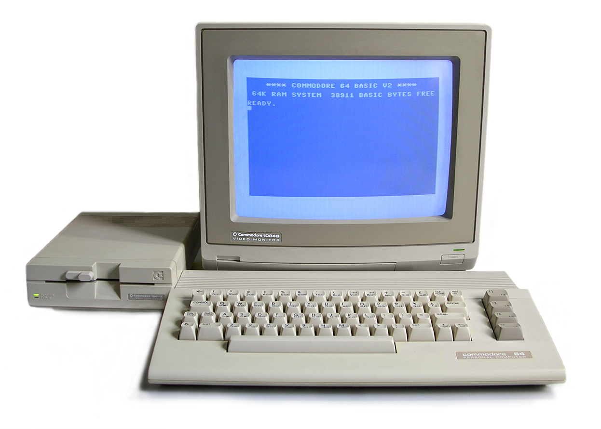
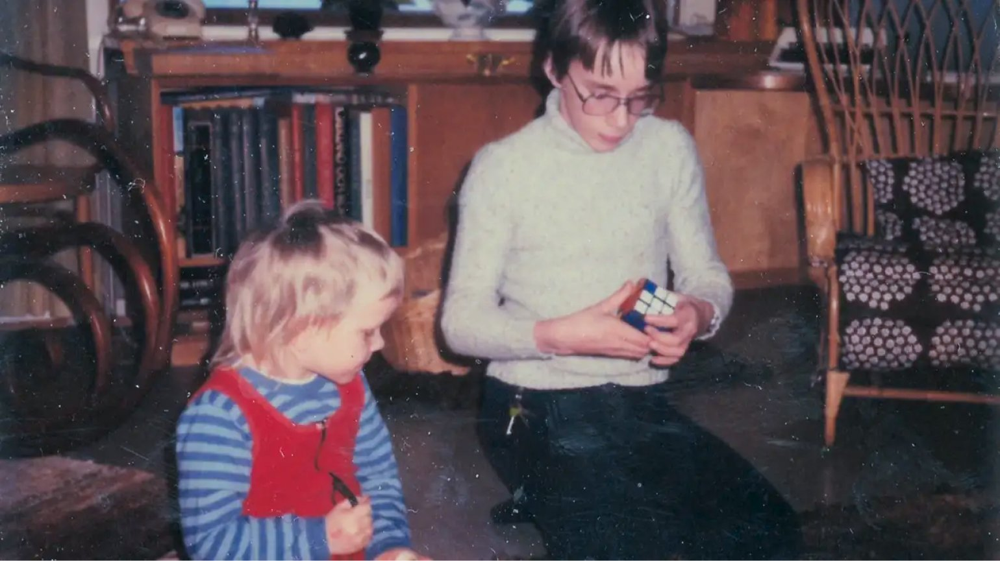
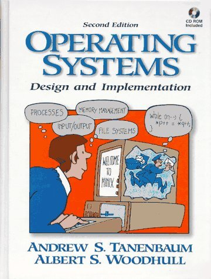

Биография
Содержание
Ранние годы
Линус Бенедикт Торвальдс родился в Хельсинки, Финляндия. Его семья была далека от программирования: отец, Нильс Торвальдс, работал журналистом и был активным коммунистом, а мать, Анна Торвальдс, — переводчицей. Несмотря на это, в доме всегда было много книг и разговоров о политике и науке.
Родители развелись, когда Линусу было около семи лет. Он остался с матерью и её новым мужем, который работал в компании, занимавшейся компьютерами. Именно отчим однажды принёс домой Commodore VIC-20 — один из первых домашних компьютеров. С этого момента жизнь Линуса изменилась.

Учёба и первые шаги
Первую программу Линус написал в 11 лет. Это была простая игра на языке BASIC, которую он набирал с журнала. Позже он переписал её на ассемблере, чтобы понять, как всё работает «под капотом».

В школе Торвальдс не был отличником, но выделялся в математике и физике. Он любил разбираться в устройстве вещей и часто разбирал и собирал технику. В 1988 году он поступил в Хельсинкский университет на факультет информатики.
Тогда же он прочитал книгу «Operating Systems: Design and Implementation»
Эндрю Таненбаума и загорелся идеей написать собственную ОС. Позже он купил
компьютер на процессоре Intel 80386 — именно на нём он и начал
разработку будущего Linux.

Создание Linux
В Торвальдс опубликовал
в новостной группе comp.os.minix сообщение о своей операционной системе.
Он честно предупредил, что это просто хобби и «не будет таким же большим и
профессиональным, как GNU».
Я делаю (бесплатную) операционную систему (это просто хобби, не будет таким же большим и профессиональным, как GNU...)— Линус Торвальдс, 1991
Через месяц он выложил первую версию ядра — 0.01. Через два года
вышла версия 1.0. Сегодня ядро Linux используется практически везде: на серверах,
в Android, на суперкомпьютерах и даже на борту МКС.
Создание Git
До 2005 года разработчики ядра Linux пользовались проприетарной системой контроля
версий BitKeeper. Когда бесплатная лицензия была отозвана, сообщество
осталось без инструмента. Линус решил проблему радикально — написал свой.
За несколько дней он создал Git — систему, которая позже станет стандартом
в индустрии. Сегодня git используют миллионы разработчиков по всему миру.
Основные команды, которые знает каждый программист:
git init— создать репозиторийgit commit— сохранить измененияgit push— отправить на сервер
Личная жизнь
В 1993 году Линус познакомился с Туве Монни, шестикратной чемпионкой Финляндии по каратэ. Через год они поженились. У них трое детей: Патриция, Даниэла и Селеста. Семья переехала в США, где Линус сначала работал в компании Transmeta, а затем полностью сосредоточился на разработке Linux.
Торвальдс известен прямотой и нелюбовью к корпоративной суете. Он редко даёт интервью и предпочитает работать из дома. Его девиз — «Talk is cheap. Show me the code.»